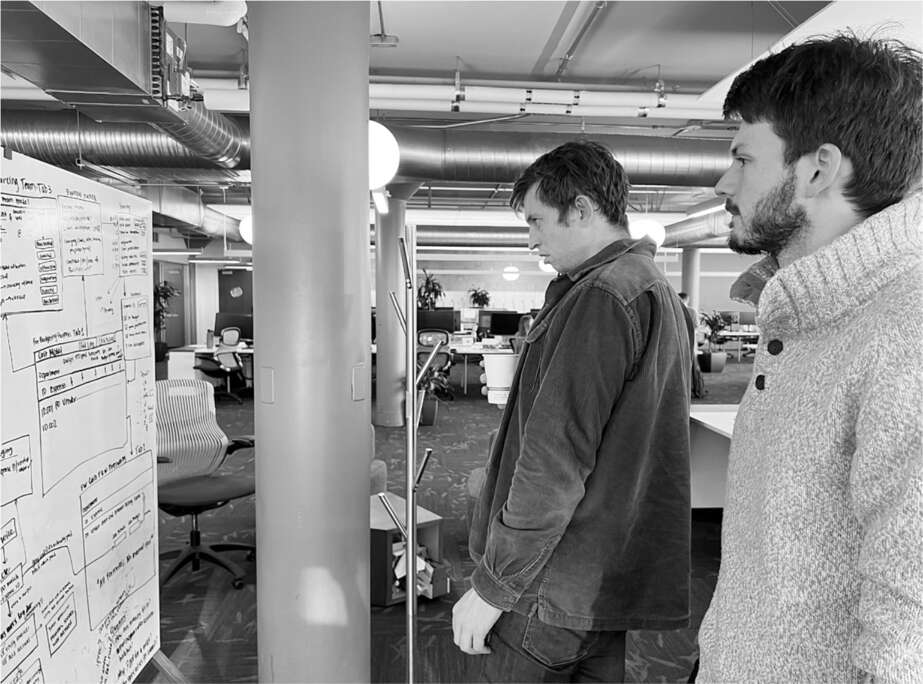

Khôi phục tài khoản
"Kathy Griffin, Jordan Peterson & Babylon Bee đã được khôi phục tài khoản", Musk đăng tweet vào chiều thứ Sáu, ngày 18 tháng 11. "Quyết định về Trump vẫn chưa được đưa ra." Khi Yoel Roth và những người khác đã rời đi, ông đơn phương quyết định dỡ bỏ lệnh cấm không chỉ với Bee và Peterson mà còn cả với diễn viên hài cấp tiến Kathy Griffin, người đã tạo một tài khoản mạo danh Musk và đăng những tuyên bố chế nhạo từ ông.
Khi khôi phục các tài khoản này, ông đã công bố chính sách "lọc hiển thị" mà ông và Roth đã nghĩ ra. "Chính sách mới của Twitter là tự do ngôn luận, nhưng không phải tự do tiếp cận", ông viết. "Các tweet tiêu cực/kích động thù địch sẽ bị giảm hiển thị tối đa và bị tước quyền kiếm tiền, do đó không có quảng cáo hoặc doanh thu nào khác cho Twitter. Bạn sẽ không tìm thấy tweet trừ khi bạn chủ động tìm kiếm nó."
Ông đã vạch ra ranh giới với Alex Jones, nhà lý luận âm mưu, người tuyên bố rằng vụ xả súng tại trường tiểu học Sandy Hook năm 2012 là "một trò lừa bịp khổng lồ". Musk nói rằng Jones sẽ vẫn bị cấm. "Con đầu lòng của tôi đã chết trong vòng tay tôi", Musk đăng tweet. "Tôi đã cảm nhận được nhịp tim cuối cùng của con. Tôi không có lòng thương xót nào cho bất kỳ ai lợi dụng cái chết của trẻ em vì lợi ích, chính trị hoặc danh tiếng."
Về phần Ye, trước đây được gọi là Kanye West, anh ta vẫn đang dạy Musk những bài học về sự phức tạp của tự do ngôn luận. Anh ta xuất hiện trên podcast của Alex Jones và tuyên bố: "Tôi yêu Hitler". Sau đó, anh ta đăng trên Twitter một bức ảnh Musk đang mặc đồ bơi bị Ari Emanuel xịt vòi rồng, mang hàm ý bài Do Thái, bị người Do Thái kiểm soát. "Hãy luôn nhớ đây là tweet cuối cùng của tôi", Ye viết, sau đó đăng một hình chữ vạn bên trong Ngôi sao David.
"Tôi đã cố gắng hết sức", Musk tuyên bố. "Tuy nhiên, Ye lại vi phạm quy tắc của chúng tôi về kích động bạo lực. Tài khoản sẽ bị đình chỉ."
Sau đó là câu hỏi liệu Donald Trump có nên được khôi phục tài khoản hay không. "Tôi muốn tránh những tranh cãi vô nghĩa về Trump", Musk đã nói với tôi vài tuần trước đó, nhấn mạnh rằng nguyên tắc của ông luôn là cho phép tự do ngôn luận chỉ khi nó nằm trong giới hạn của pháp luật. "Nếu ông ta tham gia vào hoạt động tội phạm - dường như ngày càng có nhiều khả năng ông ta đã làm - thì điều đó là không thể chấp nhận được", Musk nói. "Phá hoại nền dân chủ không phải là tự do ngôn luận."
Nhưng đến ngày 18 tháng 11 - thứ Sáu mà ông triệu tập các kỹ sư để xem xét mã - ông đang trong tâm trạng hăng hái và sẵn sàng thay đổi quyết định của mình. James và những người ủng hộ ông đang cố gắng hết sức để duy trì hoạt động của Twitter bất chấp sự ra đi đột ngột của hàng trăm kỹ sư và áp lực do các video World Cup gây ra. Điều cuối cùng họ muốn là một rắc rối khác xảy ra với hệ thống. Đó là lúc Musk bước ra từ một cuộc họp trong phòng họp có tường kính của mình với Robin Wheeler, người vẫn đang giữ chức vụ giám đốc bán quảng cáo của Twitter, và cho James và Ross xem chiếc iPhone của mình. "Hãy xem tôi vừa đăng tweet gì", ông nói với một nụ cười tinh quái.
Có một cuộc thăm dò ý kiến: "Khôi phục tài khoản cho cựu Tổng thống Trump? Có. Không." Bỏ qua tính hợp lý của việc dỡ bỏ lệnh cấm đối với Trump và việc để một cuộc thăm dò trực tuyến tự do quyết định, vấn đề kỹ thuật mới đáng quan ngại. Việc thực hiện một cuộc thăm dò, nơi hàng triệu phiếu bầu phải được tính ngay lập tức và hiển thị theo thời gian thực trên nguồn cấp dữ liệu của người dùng, có thể khiến các máy chủ thiếu nhân lực của Twitter bị quá tải. Nhưng Musk lại ưa thích rủi ro. Anh ta muốn xem một chiếc xe có thể chạy nhanh đến mức nào, điều gì sẽ xảy ra khi bạn đạp hết ga, bạn có thể bay gần mặt trời đến đâu. James và Ross nói rằng họ "sợ chết khiếp", nhưng Musk dường như lại rất vui vẻ.
Khi cuộc thăm dò kết thúc vào ngày hôm sau, hơn 15 triệu người dùng đã bỏ phiếu. Kết quả khá sát sao: 51,8% so với 48,2% ủng hộ việc khôi phục tài khoản cho Trump. Musk tuyên bố: "Dân chúng đã lên tiếng. Trump sẽ được khôi phục. Tiếng nói của nhân dân là tiếng nói của Chúa".
Ngay sau đó, tôi hỏi liệu anh ta có dự đoán trước được kết quả cuộc thăm dò hay không. Anh ta nói không. Và nếu kết quả ngược lại, liệu anh ta có tiếp tục cấm Trump không? Có. "Tôi không phải là người hâm mộ Trump. Ông ta gây rối. Ông ta là nhà vô địch thế giới về những lời nói nhảm nhí."
Vòng ba
Trong cuộc họp với Musk vào chiều thứ Sáu đó, giám đốc bán hàng quảng cáo Robin Wheeler nói với anh ta rằng cô ấy sẽ từ chức. Cô đã cố gắng làm như vậy một tuần trước đó, cùng lúc với Yoel Roth, nhưng Musk và Jared Birchall đã thuyết phục cô ở lại.
Hầu hết mọi người, bao gồm Ross và James, đều cho rằng việc cô từ chức là phản ứng trước quyết định khôi phục tài khoản đơn phương và khởi động cuộc thăm dò về việc bỏ cấm Trump của Musk. Nhưng điều thực sự khiến Wheeler bận tâm hơn là việc Musk quyết định sa thải thêm một đợt nữa, và anh ta yêu cầu cô lập danh sách những người cô sẽ cho thôi việc. Đầu tuần đó, cô đã đứng trước tổ chức bán hàng của mình và nói với họ lý do tại sao họ nên chọn nút "đồng ý" để trở thành một phần của Twitter mới, đầy thách thức. Giờ đây, cô sẽ phải nhìn thẳng vào mắt một số người trong số họ, những người đã nói đồng ý, và nói với họ rằng họ bị sa thải.
Mục tiêu sa thải và cắt giảm nhân sự của Musk liên tục thay đổi, tùy thuộc vào tâm trạng của anh ta. Có lúc anh ta nói với các "chiến binh" rằng anh ta muốn giảm nhóm viết phần mềm xuống còn năm mươi người. Vào những thời điểm khác trong tuần đó, anh ta nói rằng họ không nên lo lắng về con số tuyệt đối. Anh ta nói với họ: "Chỉ cần lập danh sách những kỹ sư thực sự giỏi và loại bỏ những người còn lại".
Để tạo điều kiện cho quá trình này, Musk đã yêu cầu tất cả các kỹ sư phần mềm của Twitter gửi cho anh ta các mẫu mã mà họ đã viết gần đây. Cuối tuần, Ross đã làm việc để chuyển các câu trả lời từ hộp thư của Musk sang hộp thư của mình để anh ta, James và Dhaval có thể đánh giá công việc. Vào tối Chủ nhật, anh ta nói một cách mệt mỏi: "Tôi có năm trăm email gửi bài trong hộp thư đến của mình. Chúng tôi bằng cách nào đó phải xem qua tất cả chúng tối nay để xem kỹ sư nào nên ở lại."
Tại sao Musk lại làm điều này? Ross nói: "Anh ấy tin rằng một nhóm nhỏ các kỹ sư đa năng thực sự xuất sắc có thể làm việc hiệu quả gấp trăm lần so với một nhóm thông thường. Giống như một tiểu đoàn lính thủy đánh bộ nhỏ nhưng thực sự gắn kết có thể làm được những điều đáng kinh ngạc. Và tôi nghĩ anh ấy muốn nhanh chóng kết thúc việc này. Anh ấy không muốn kéo dài nó ra."
Ross, James và Andrew đã gặp Musk vào sáng thứ Hai và trình bày các tiêu chí họ đã sử dụng để đánh giá các bài dự thi. Musk chấp thuận kế hoạch và sau đó đi xuống cầu thang với Alex Spiro đến quán cà phê, nơi ông vội vàng triệu tập một cuộc họp toàn thể nhân viên khác. Trên đường đi, ông hỏi Spiro rằng mình nên nói gì nếu bị hỏi về khả năng sa thải thêm nhân viên. Spiro đề nghị ông nên tránh né chủ đề này, nhưng Musk quyết định sẽ nói rằng "sẽ không còn sa thải nữa". Lý do của ông là đợt sa thải sắp tới sẽ là sa thải những người "vì lý do chính đáng" do hiệu suất công việc của họ không đủ tốt, chứ không phải là sa thải để giảm biên chế, mà những người bị sa thải sẽ được nhận một khoản trợ cấp thôi việc hậu hĩnh. Ông đang đưa ra một sự phân biệt mà hầu hết mọi người đều bỏ qua. "Sẽ không còn kế hoạch cắt giảm nhân sự nào nữa", ông tuyên bố ngay từ đầu cuộc họp, nhận được những tràng pháo tay vang dội.
Sau đó, ông gặp gỡ với một nhóm các lập trình viên trẻ tuổi được Ross và James lựa chọn vì sự xuất sắc của họ. Việc thảo luận về kỹ thuật khiến ông cảm thấy thoải mái, và ông đã đi sâu vào các vấn đề với họ, chẳng hạn như cách để tải video lên dễ dàng hơn. Ông nói với họ rằng trong tương lai, các nhóm tại Twitter sẽ được dẫn dắt bởi các kỹ sư như họ chứ không phải là các nhà thiết kế và quản lý sản phẩm. Đó là một sự thay đổi tinh tế. Nó phản ánh niềm tin của ông rằng Twitter, về cốt lõi, nên là một công ty kỹ thuật phần mềm, được dẫn dắt bởi những người am hiểu về lập trình, chứ không phải là một công ty truyền thông và sản phẩm tiêu dùng, được dẫn dắt bởi những người am hiểu về các mối quan hệ và mong muốn của con người.
Tại sao lại khắt khe như vậy?
Đợt thông báo sa thải cuối cùng được gửi đi vào ngày trước Lễ Tạ Ơn. "Xin chào, Kết quả của bài kiểm tra đánh giá mã gần đây cho thấy mã của bạn không đạt yêu cầu, và chúng tôi rất tiếc phải thông báo rằng hợp đồng lao động của bạn với Twitter sẽ bị chấm dứt ngay lập tức." Năm mươi kỹ sư đã bị cho thôi việc, mật khẩu và quyền truy cập của họ bị cắt ngay lập tức.
Ba đợt sa thải diễn ra rời rạc đến mức ban đầu rất khó để thống kê tổng số người bị ảnh hưởng. Khi mọi việc lắng xuống, khoảng 75% lực lượng lao động của Twitter đã bị cắt giảm. Có gần tám nghìn nhân viên khi Musk tiếp quản vào ngày 27 tháng 10. Đến giữa tháng 12, chỉ còn hơn hai nghìn người.
Musk đã tạo ra một trong những thay đổi lớn nhất trong văn hóa doanh nghiệp từ trước đến nay. Twitter đã chuyển từ một trong những nơi làm việc chu đáo nhất, với đầy đủ các bữa ăn miễn phí, phòng tập yoga, ngày nghỉ được trả lương và quan tâm đến "an toàn tâm lý", sang một thái cực khác. Ông làm điều đó không chỉ vì lý do chi phí. Ông thích một môi trường làm việc quyết liệt, nơi các chiến binh cuồng nhiệt cảm thấy nguy hiểm về mặt tâm lý hơn là thoải mái.
Đôi khi điều đó có nghĩa là ông đã phá vỡ mọi thứ, và có vẻ như ông có thể làm điều đó với Twitter. Hashtag #twitterdeathwatch bắt đầu thịnh hành. Các chuyên gia công nghệ và truyền thông đã viết lời chia tay với dịch vụ này, cho rằng nó sẽ biến mất bất cứ lúc nào. Ngay cả Musk cũng cười thừa nhận rằng ông nghĩ nó có thể sụp đổ. Ông cho tôi xem ảnh động về một thùng rác đang cháy lăn xuống đường và thừa nhận, "Có những ngày tôi thức dậy và xem Twitter để xem nó có còn hoạt động không." Nhưng mỗi sáng khi ông kiểm tra, nó vẫn đang chạy. Nó đã vượt qua lưu lượng truy cập kỷ lục trong World Cup. Hơn thế nữa, với hạt nhân là các kỹ sư năng động, nó bắt đầu đổi mới và bổ sung các tính năng nhanh hơn bao giờ hết.
Zoë Schiffer, Casey Newton và Alex Heath tại The Verge và New York Magazine đã thực hiện những bài báo điều tra chuyên sâu, hé lộ những câu chuyện gây sốc về tình hình hỗn loạn tại Twitter. Họ cho thấy Musk đã phá vỡ “nền văn hóa doanh nghiệp đã xây dựng Twitter thành một trong những mạng xã hội có ảnh hưởng nhất thế giới”. Tuy nhiên, họ cũng lưu ý rằng những dự đoán thảm khốc mà nhiều đồng nghiệp của họ đưa ra đã không xảy ra. “Ở một số khía cạnh, Musk đã đúng”, họ viết. “Twitter kém ổn định hơn, nhưng nền tảng này vẫn tồn tại và phần lớn hoạt động được ngay cả khi phần lớn nhân viên đã rời đi. Ông ấy đã hứa sẽ tinh gọn một công ty cồng kềnh, và giờ đây nó hoạt động với số lượng nhân sự tối thiểu.”
Phương pháp của Musk, giống như từ thời tên lửa Falcon 1, là lặp lại nhanh chóng, chấp nhận rủi ro, quyết liệt, chấp nhận một số thất bại, rồi thử lại. “Chúng tôi đã thay động cơ khi máy bay đang mất kiểm soát”, ông nói về Twitter. “Thật kỳ diệu là chúng tôi vẫn sống sót.”
Chuyến thăm Apple
“Apple gần như đã ngừng quảng cáo trên Twitter,” Musk đăng trên Twitter vào cuối tháng 11. “Họ có ghét tự do ngôn luận ở Mỹ không?”
Tối hôm đó, Musk có một cuộc trò chuyện dài qua điện thoại như thường lệ với người cố vấn và nhà đầu tư Larry Ellison, khi đó đang sống chủ yếu ở Lanai, hòn đảo mà ông sở hữu ở Hawaii. Ellison, người từng là cố vấn của Steve Jobs, đã cho Musk một lời khuyên: ông không nên gây chiến với Apple. Đó là công ty duy nhất mà Twitter không thể để mất. Apple là một nhà quảng cáo lớn. Quan trọng hơn, Twitter không thể tồn tại nếu nó không còn xuất hiện trên App Store của iPhone.
Ở một số khía cạnh, Musk giống như Steve Jobs, một người tài giỏi nhưng khó tính, có khả năng bóp méo thực tế, khiến nhân viên phát điên nhưng cũng thúc đẩy họ làm những điều họ nghĩ là không thể. Ông có thể đối đầu, với cả đồng nghiệp và đối thủ. Tim Cook, người tiếp quản Apple vào năm 2011, thì khác. Ông bình tĩnh, kỷ luật và lịch sự một cách đáng ngạc nhiên. Mặc dù ông có thể cứng rắn khi cần thiết, nhưng ông tránh những cuộc đối đầu không cần thiết. Trong khi Jobs và Musk dường như bị cuốn hút bởi kịch tính, Cook lại có bản năng xoa dịu nó. Ông có một la bàn đạo đức vững vàng.
“Tim không muốn bất kỳ sự thù địch nào,” một người bạn chung nói với Musk. Đó không phải là kiểu thông tin thường khiến Musk thoát khỏi chế độ chiến binh, nhưng ông nhận ra rằng gây chiến với Apple không phải là một ý kiến hay. “Tôi nghĩ, ừ, tôi cũng không muốn bất kỳ sự thù địch nào,” Musk nói. “Vì vậy, tôi nghĩ, được rồi, tôi sẽ đến thăm ông ấy tại trụ sở Apple.”
Còn một lý do khác. “Tôi đang tìm cớ để đến thăm trụ sở của Apple, vì tôi nghe nói nó rất tuyệt vời,” ông nói. Tòa nhà hình tròn khổng lồ bằng kính cong được thiết kế riêng bao quanh một hồ nước yên bình đã được thiết kế, dưới sự giám sát chặt chẽ của Jobs, bởi kiến trúc sư người Anh Norman Foster, người đã gặp Musk ở Austin để thảo luận về việc xây nhà cho ông.
Musk gửi email trực tiếp cho Cook, và họ đồng ý gặp nhau vào thứ Tư đó. Khi Musk đến trụ sở Apple ở Cupertino, ấn tượng đầu tiên của nhân viên Apple là ông trông giống như một người đã không ngủ ngon trong nhiều tuần. Họ vào phòng họp của Cook cho một cuộc gặp riêng kéo dài hơn một giờ. Cuộc gặp bắt đầu bằng việc họ trao đổi những câu chuyện kinh hoàng về chuỗi cung ứng. Kể từ sự cố trong quá trình sản xuất Roadster, Musk đã hiểu sâu sắc về sự khó khăn của việc quản lý chuỗi cung ứng, và ông cho rằng, đúng vậy, Cook là bậc thầy. “Tôi không nghĩ có nhiều người có thể làm tốt hơn Tim,” Musk nói.
Về vấn đề quảng cáo, họ đã đạt được một thỏa thuận ngừng chiến. Cook giải thích rằng việc bảo vệ niềm tin xung quanh thương hiệu Apple là ưu tiên hàng đầu của ông. Công ty không muốn quảng cáo của mình xuất hiện trong một môi trường độc hại đầy rẫy thù hận, thông tin sai lệch và nội dung không an toàn. Nhưng ông cam kết rằng Apple sẽ không ngừng quảng cáo trên Twitter, và cũng không có kế hoạch gỡ Twitter khỏi App Store. Khi Musk đề cập đến mức chiết khấu 30% mà Apple thu từ mọi giao dịch trên App Store, Cook giải thích con số đó đã giảm xuống 15% theo thời gian.
Musk phần nào cảm thấy được xoa dịu, ít nhất là ở thời điểm hiện tại, nhưng vẫn còn một vấn đề mà Yoel Roth đã cảnh báo ông: Apple không sẵn lòng chia sẻ dữ liệu về giao dịch mua hàng hoặc thông tin khách hàng. Điều đó sẽ khiến Musk khó khăn hơn nhiều trong việc theo đuổi tầm nhìn bổ sung dịch vụ tài chính X.com vào Twitter. Đây là một vấn đề đang được tranh luận tại các tòa án Mỹ cũng như bởi các cơ quan quản lý ở Châu Âu, và Musk quyết định không đề cập đến vấn đề này trong cuộc gặp với Cook. "Đó là một cuộc chiến chúng ta sẽ phải đối mặt trong tương lai," ông nói, "hoặc ít nhất là một cuộc trò chuyện mà tôi và Tim sẽ cần phải thực hiện."
Khi cuộc họp kết thúc, Cook đưa Musk đi dạo đến những cây mơ và hồ nước yên bình ở giữa khuôn viên hình tròn mà Jobs đã hình dung. Musk lấy iPhone ra để quay video. "Cảm ơn @tim_cook đã đưa tôi đi tham quan trụ sở tuyệt đẹp của Apple," ông đã tweet ngay khi trở lại xe. "Chúng tôi đã giải quyết hiểu lầm về việc Twitter có khả năng bị xóa khỏi App Store. Tim đã nói rõ rằng Apple chưa bao giờ cân nhắc việc làm như vậy."

James Musk và Ben San Souci